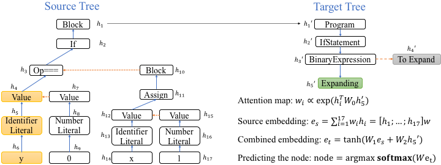
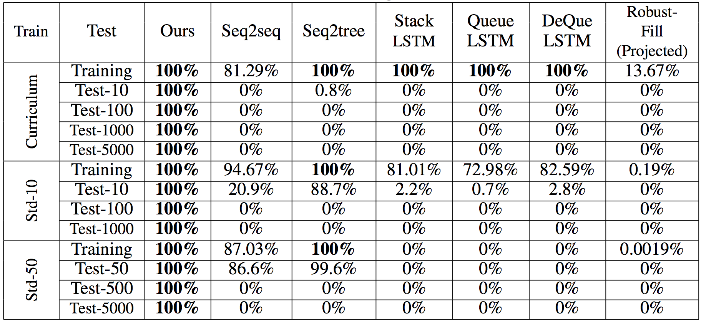
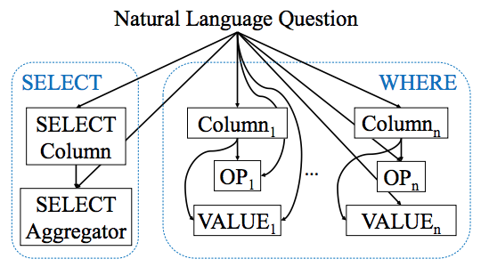
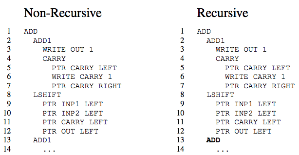
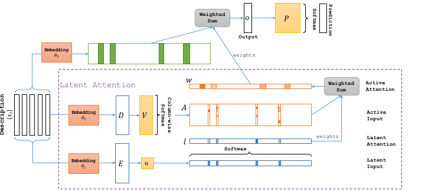

Parametrized Hierarchical Procedures for Neural Programming
Roy Fox, Richard Shin, Sanjay Krishnan, Ken Goldberg, Dawn Song, Ion Stoica.
International Conference on Learning Representations (ICLR). January, 2018.
|  | Tree-to-tree Neural Networks for Program Translation Xinyun Chen, Chang Liu, Dawn Song. Workshop of International Conference on Learning Representations (ICLR). January, 2018.
|
|  | Towards Synthesizing Complex Programs from Input-Output Examples Xinyun Chen, Chang Liu, Dawn Song. International Conference on Learning Representations (ICLR). January, 2018.
|
|
Parametrized Hierarchical Procedures for Neural Programming Roy Fox, Richard Shin, Sanjay Krishnan, Ken Goldberg, Dawn Song, Ion Stoica. International Conference on Learning Representations (ICLR). January, 2018.
|
|  | SQLNet: Generating Structured Queries From Natural Language Without Reinforcement Learning Xiaojun Xu, Chang Liu, Dawn Song. November, 2017.
|
|  | Making Neural Programming Architectures Generalize via Recursion Jonathon Cai, Richard Shin, Dawn Song. International Conference on Learning Representations (ICLR). April, 2017. Best Paper Award
|
|  | Latent Attention For If-Then Program Synthesis Xinyun Chen, Chang Liu, Richard Shin, Dawn Song, Mingcheng Chen. Advances in Neural Information Processing Systems (NIPS). December, 2016.
|
Faculty: Dawn Song
Postdocs:
Ph.D. Students:
Xinyun Chen